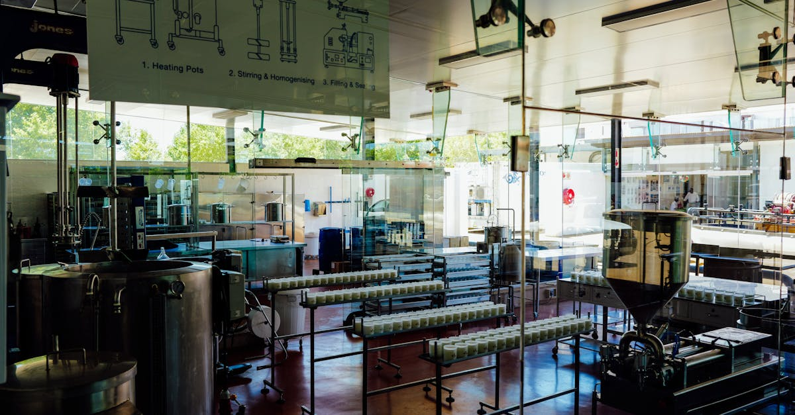
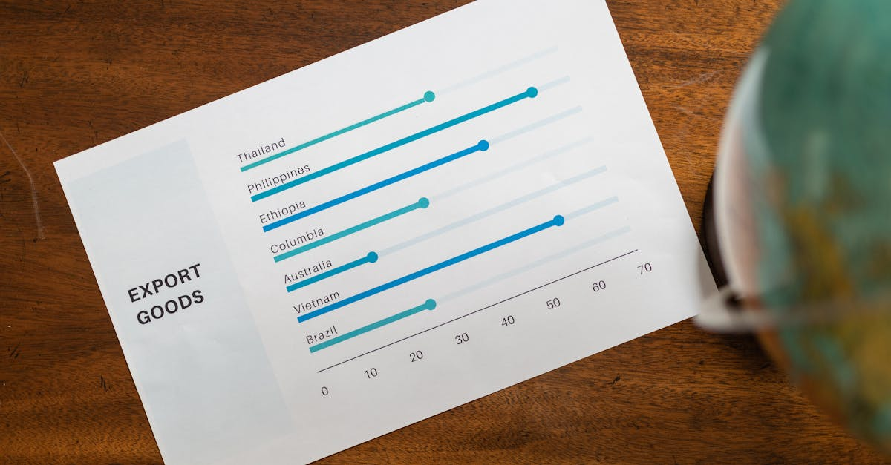

CATL: Le Géant des Batteries S'ouvre au Marché
Dans un mouvement financier d'envergure, Contemporary Amperex Technology Co. Ltd. (CATL), le leader incontesté de la fabrication de batteries pour véhicules électriques, a réussi une levée de fonds spectaculaire de 5 milliards de dollars américains. Cette opération, qui a attiré l'attention des plus grands noms de la finance mondiale, témoigne de la confiance accordée à la stratégie et au potentiel de croissance de l'entreprise chinoise. Parmi les participants notables, on retrouve des institutions prestigieuses telles que Millennium Management, un fonds spéculatif réputé pour sa gestion agile des actifs, et Norges Bank Investment Management (NBIM), le fonds souverain norvégien, l'un des plus importants au monde. Ces investissements massifs ne sont pas anodins ; ils signalent une reconnaissance de la position dominante de CATL dans une industrie en pleine mutation, celle de la mobilité électrique, intrinsèquement liée aux avancées technologiques et énergétiques. L'ampleur de cette levée de fonds suggère que CATL compte bien financer des projets ambitieux, qu'il s'agisse d'expansion de capacités de production, de recherche et développement de nouvelles générations de batteries, ou encore d'intégration verticale pour sécuriser ses approvisionnements en matières premières critiques. La participation de fonds d'une telle envergure souligne également une appétence renouvelée pour les actifs liés à la transition énergétique, un secteur qui continue de susciter un intérêt soutenu de la part des investisseurs institutionnels cherchant à aligner leurs portefeuilles avec les enjeux environnementaux globaux.
👉 À lire : Hengli : Réorganisation à Singapour, quels impacts sur le Forex ?

Les Investisseurs Majeurs: Pourquoi CATL?
La présence de Millennium Management et de NBIM dans cette levée de fonds n'est pas fortuite. Millennium, connu pour son approche sophistiquée du marché, évalue probablement CATL non seulement comme un acteur clé de la transition énergétique, mais aussi comme une entreprise dont la chaîne de valeur et les perspectives financières présentent des opportunités d'arbitrage et de croissance. Leur investissement pourrait refléter une conviction sur la capacité de CATL à innover et à maintenir sa domination technologique face à une concurrence accrue. Quant à NBIM, son mandat est de gérer le fonds de richesse du gouvernement norvégien pour le compte des générations futures, en investissant de manière responsable et à long terme. L'inclusion de CATL dans leur portefeuille, malgré les considérations géopolitiques et les risques potentiels liés à la chaîne d'approvisionnement, indique une analyse approfondie des fondamentaux de l'entreprise. Ils reconnaissent sans doute le rôle crucial de CATL dans la décarbonisation de l'industrie automobile mondiale et l'importance stratégique des batteries dans l'écosystème énergétique futur. L'entreprise représente une pierre angulaire dans la construction d'une économie plus verte, un objectif qui résonne fortement avec les principes d'investissement durable prônés par de nombreux fonds souverains et institutions financières modernes. La décision d'investir autant souligne une vision à long terme, anticipant une demande soutenue pour les technologies de batteries avancées.
👉 À lire : Le Graphique Viral de l'IA : Révolution ou Illusion ?
L'IA au Cœur de l'Innovation et de la Production
Si CATL est avant tout un fabricant de batteries, l'intelligence artificielle joue un rôle de plus en plus prépondérant dans ses opérations et son développement. L'IA est utilisée à plusieurs niveaux : dans la recherche et développement pour accélérer la découverte de nouveaux matériaux et la conception de cellules plus performantes, dans l'optimisation des processus de production pour améliorer le rendement et réduire les coûts, et enfin dans la gestion de la chaîne d'approvisionnement pour anticiper les fluctuations des prix des matières premières et assurer la fluidité des livraisons. L'efficacité opérationnelle permise par l'IA est un facteur clé de la compétitivité de CATL. Par exemple, des algorithmes d'apprentissage automatique peuvent analyser des millions de points de données issus des lignes de production pour identifier des anomalies minimes, prédire des défaillances d'équipement avant qu'elles ne surviennent, et ajuster les paramètres en temps réel pour garantir une qualité constante. Cette maîtrise technologique, renforcée par l'IA, est précisément ce qui attire des investisseurs comme Millennium et NBIM. Ils ne parient pas seulement sur les batteries, mais sur une entreprise qui sait intégrer les technologies de pointe pour rester en tête. Cette synergie entre l'industrie lourde et l'intelligence artificielle ouvre des perspectives fascinantes, bien au-delà du seul secteur automobile. On peut imaginer des applications dans le stockage d'énergie stationnaire, l'électronique portable, et même, par extension, dans des domaines où l'analyse prédictive et l'automatisation sont cruciales. L'IA n'est plus une simple option, elle est devenue un impératif stratégique pour les leaders industriels.

Pertinence pour le Trading Forex Automatisé par IA
L'actualité de CATL, bien que centrée sur l'industrie des batteries, possède des échos intéressants pour le monde du trading forex automatisé par IA. Premièrement, elle illustre la puissance de l'analyse prédictive et de l'optimisation des processus, des concepts fondamentaux pour tout système de trading algorithmique. Les méthodes employées par CATL pour améliorer sa production et sa R&D, basées sur l'IA, sont conceptuellement similaires à celles utilisées par les agents IA pour analyser les marchés financiers. La capacité à traiter d'énormes volumes de données, à identifier des patterns subtils et à prendre des décisions rapides est commune aux deux domaines. Deuxièmement, l'investissement massif dans CATL par des fonds comme Millennium et NBIM peut influencer les flux de capitaux mondiaux. Ces grands acteurs financiers ajustent leurs stratégies d'allocation d'actifs, ce qui peut avoir des répercussions sur les devises, les matières premières (dont celles utilisées dans les batteries, comme le lithium ou le cobalt, qui ont aussi des marchés au comptant et à terme) et les indices boursiers. Un agent IA spécialisé dans le trading forex peut intégrer ces informations macroéconomiques et sectorielles, agrégées et analysées en temps réel, pour anticiper les mouvements de marché. Par exemple, une augmentation significative de l'investissement dans les énergies vertes pourrait signaler une tendance haussière pour certaines devises de pays producteurs de ces ressources, ou une pression baissière sur celles liées aux énergies fossiles. L'IA appliquée au forex permet de décrypter ces signaux complexes, là où l'analyse humaine pourrait être dépassée par la vitesse et le volume de l'information. En somme, cette levée de fonds de CATL est un exemple concret de la manière dont les développements industriels et les stratégies d'investissement institutionnel créent un environnement de marché dynamique, que les outils d'IA sont particulièrement bien placés pour exploiter.
L'Impact sur les Marchés Financiers et les Devises
L'injection de 5 milliards de dollars dans une entreprise comme CATL ne reste pas sans conséquences sur la toile financière globale. Ces fonds proviennent d'investisseurs qui redéploient des capitaux considérables, potentiellement issus de la vente d'autres actifs. Cette réallocation peut créer des effets de cascade. Par exemple, si Millennium et NBIM ont vendu d'autres positions pour financer cet investissement, cela peut entraîner des mouvements sur d'autres marchés. De plus, l'importance stratégique de CATL dans la chaîne d'approvisionnement des véhicules électriques signifie que sa santé financière et ses perspectives de croissance sont scrutées de près. Toute nouvelle concernant l'entreprise peut influencer la valorisation des constructeurs automobiles mondiaux, des fournisseurs de composants, et même des entreprises minières. Sur le marché des changes, l'impact peut être plus subtil mais non moins réel. Une forte confiance dans le secteur des batteries et de la mobilité électrique, symbolisée par cet investissement, peut renforcer la devise du pays où l'entreprise est cotée ou a ses principales opérations, le cas échéant. Elle peut aussi influencer les devises des pays qui sont des fournisseurs clés de matières premières pour ces batteries. Les grandes institutions financières, en ajustant leurs portefeuilles, effectuent des transactions sur le marché des changes, ce qui modifie l'offre et la demande de devises. Un agent IA performant dans le trading forex est capable de capter ces signaux, aussi bien les mouvements directs des grands fonds que les réactions en chaîne sur différents secteurs et devises. L'analyse des flux de capitaux, des nouvelles macroéconomiques et des indicateurs sectoriels est une tâche complexe que l'IA peut accomplir avec une rapidité et une précision inégalées.

Vers une Automatisation Accrue des Décisions d'Investissement?
L'investissement massif dans CATL par des acteurs institutionnels majeurs comme Millennium et NBIM soulève une question fondamentale : jusqu'où ira la tendance à l'automatisation des décisions d'investissement ? Ces fonds utilisent déjà des technologies avancées, y compris l'IA, pour analyser les marchés et exécuter des stratégies. La levée de fonds pour CATL est probablement le résultat d'analyses complexes, où l'IA a joué un rôle dans l'évaluation des risques et des rendements potentiels. Ce qui était autrefois le domaine exclusif des analystes humains est de plus en plus pris en charge par des algorithmes sophistiqués. Pour les traders particuliers, cela signifie que les marchés deviennent plus compétitifs. Les stratégies qui reposent sur des analyses manuelles lentes ou des informations publiques tardives sont vouées à l'échec face à la vitesse et à la puissance de calcul des systèmes automatisés. C'est là qu'intervient la pertinence d'un agent IA dédié au trading forex. Ces outils sont conçus pour opérer 24h/24, 7j/7, en analysant en permanence une multitude de données : actualités économiques, indicateurs techniques, flux d'ordres, sentiment du marché, et même des événements géopolitiques majeurs comme cette levée de fonds de CATL. Ils peuvent réagir instantanément aux opportunités et aux menaces, exécutant des transactions avec une précision chirurgicale, bien au-delà des capacités humaines. L'objectif n'est pas de remplacer l'investisseur, mais de lui fournir un outil puissant pour naviguer dans un environnement financier de plus en plus complexe et automatisé, en capitalisant sur les mouvements de marché générés par les grands acteurs, qu'ils investissent dans les batteries ou dans tout autre secteur.
Conclusion
La levée de fonds de 5 milliards de dollars de CATL, avec la participation de géants comme Millennium et NBIM, est un événement marquant qui illustre la dynamique actuelle des marchés financiers et l'importance croissante des secteurs liés à la transition énergétique. Au-delà de l'industrie des batteries, cet événement met en lumière le rôle de plus en plus prégnant de l'intelligence artificielle, tant dans l'optimisation des opérations industrielles que dans l'analyse et la prise de décision sur les marchés financiers. Pour les acteurs du trading, qu'ils soient particuliers ou institutionnels, comprendre ces évolutions est crucial. Les flux de capitaux massifs, les stratégies d'investissement sophistiquées et l'intégration de l'IA dans tous les domaines créent un environnement où l'agilité et la capacité d'analyse rapide sont primordiales. C'est dans ce contexte que des solutions comme un agent IA pour le trading forex prennent tout leur sens. En automatisant l'analyse et l'exécution des transactions 24h/24, ces outils offrent une réponse concrète à la complexité et à la vitesse des marchés modernes, permettant aux investisseurs de potentiellement capitaliser sur les opportunités générées par des événements majeurs, tout en gérant les risques avec une efficacité accrue. L'avenir du trading est indéniablement lié à l'intelligence artificielle.